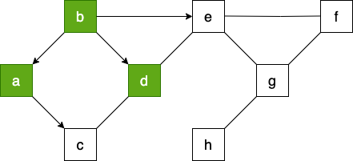

Algorithmes sur les graphes#
Représentations d'un graphe#
Rappels et exemple#
Un graphe est caractérisé par sa matrice d'adjacence composée de 1 et de 0 selon que deux sommets sont ou ne sont pas reliés par une arête.
Exemple de graphe :

Représentation à l'aide d'un dictionnaire#
Implémentation Python avec un dictionnaire :
G = {}
G['a'] = ['b','c']
G['b'] = ['a','d','e']
G['c'] = ['a','d']
G['d'] = ['b','c','e']
G['e'] = ['b','d','f','g']
G['f'] = ['e','g']
G['g'] = ['e','f','h']
G['h'] = ['g']
Exercice 1
Implémenter le graphe G selon cette méthode.
Exercice 2
Écrire des fonctions pour obtenir :
- Nombre de sommets
- Nombre d'arêtes
- Degré d'un sommet
- Sommet de plus haut degré
- Voisins d'un sommet
Code pour générer la matrice d'adjacence :
A l'aide d'une liste de liste#
Exercice 3
Implémenter le graphe G avec cette matrice.
Exercice 4
Écrire les mêmes fonctions que précédemment.
- Nombre de sommets
- Nombre d'arêtes
- Degré d'un sommet
- Sommet de plus haut degré
- Voisins d'un sommet
Exercice 5
Implémenter le graphe du réseau social suivant et faire afficher celui qui a le plus d’amis. un réseau social comporte 6 abonnés (A, B, C, D, E et F) où :
- A est ami avec B, C et D
- B est ami avec A et D
- C est ami avec A, E et D
- D est ami avec tous les autres abonnés
- E est ami avec C, D et F
- F est ami avec E et D

À l'aide d'une bibliothèque#
La bibliothèque networkX permet de manipuler des graphes.
Pour implémenter le graphe G, on commence par importer le module.
On crée un graphe vide.
On ajoute les sommets (appelés node ou vertex)
On ajoute les arêtes (appelés edge)
On peut visualiser le graphe grâce à matplotlib et la fonction draw. Ici on a de plus configuré l’affichage pour que les étiquettes des sommets soient affichées, la taille des sommets soit de 800, la couleur de fond des sommets gris clair.
On peut également le faire avec des listes de sommets et d’arêtes :
Pour la matrice d’adjacence : networkx propose une méthode nx.adjacency_matrix(g2) qui stocke les coefficient saij de la matrice d’adjacence. Il suffit alors de remplir un tableau avec ces coefficients
La documentation de NetworkX est divisée en sections. Il existe notamment :
- une section pour obtenir les méthodes sur https://networkx.org/documentation/stable/reference/functions.html ;
- une section pour obtenir les https://networkx.org/documentation/stable/reference/algorithms/index.html ;
- on pourra aussi consulter le https://networkx.org/documentation/stable/tutorial.html de NetworkX
Voici quelques fonctions :
- degrés d’un sommet du graphe g :
g.degree('a') - nombre de sommets du graphe g :
g.number_of_nodes() - nombre d’arcs du graphe g :
g.number_of_edges() g.predecessors(i): liste des prédecesseurs du sommet \(i\)- `g.successors(i) : liste des successeurs du sommet \(i\)
g.neighbors(i): liste des voisins du sommet \(i\)
Exercice 6
Tester ces différents programmes.
Exercice 7
Écrire des fonctions permettant d’obtenir les informations suivantes sur le graphe G :
- le nombre de sommets du graphe ;
- le nombre d’arêtes du graphe ;
- le degré d’un sommet ;
- le sommet de plus haut degré ;
- les voisins d’un sommet
Exercice 8
Implémenter le graphe du réseau social suivant et faire afficher celui qui a le plus d’amis un réseau social comporte 6 abonnés (A, B, C, D, E et F) où :
- A est ami avec B, C et D
- B est ami avec A et D
- C est ami avec A, E et D
- D est ami avec tous les autres abonnés
- E est ami avec C, D et F
- F est ami avec E et D
Principe des différents parcours#
Un parcours de graphe est un algorithme consistant à explorer tous les sommets d'un graphe de proche en proche à partir d'un sommet initial. Ces parcours sont notamment utilisés pour rechercher un plus court chemin (et donc dans les GPS) ou pour trouver la sortie d'un labyrinthe...
Tous les parcours suivent plus ou moins le même algorithme de base :
- On visite un sommet A. On crée une structure \(S\) qui contiendra au départ l'ensemble des voisins de \(A\) .
-
Tant que \(S\) n’est pas vide :
- on choisit un sommet s de \(S\)
- on visite s
- on ajoute à \(S\) tous les voisins de s pas encore visités
Le choix de la structure de l'ensemble \(S\) est prépondérant:
- Si on choisit une file (FIFO): on visitera les sommets dans l'ordre d'arrivée, donc les plus proches du sommet précédent. On obtient donc un parcours en largeur nommé Breadth First Search ou BFS.
- Si on choisit une pile (LIFO): on visitera d'abord les derniers sommets arrivés, donc on parcourt le graphe en visitant à chaque étape un voisin du précédent. On obtient donc un parcours en profondeur nommé Depth First Search ou DFS.
Remarque : parcourir simplement le dictionnaire ou la matrice d’un graphe n’est pas considéré comme un parcours de graphe.
Le parcours en largeur (Breadth First Search ou BFS)#
Principe#
Parcourir un graphe en largeur à partir d'un sommet consiste à visiter le sommet puis ses enfants, puis les enfants de ses enfants....
Comme nous l'avons vu dans le chapitre précédent, nous allons utiliser une file et une liste pour marquer les sommets visités.
Exemple#
flowchart LR
B((b)) <--> A((a))
A <--> C((c))
B <--> D((d))
C <--> D
B <--> E((e))
D <--> E
E <--> G((g))
E <--> F((f))
G<--> F
G<-->H((h))Voici le code pour créer le dictionnaire qui représente le graphe précédent et une fonction qui nous retourne la liste des voisins.
Exercice 1
Implémenter ce graphe et tester la fonction voisins}
Pour réaliser le parcours en largeur, on dispose d'un graphe (G, d'une liste (sommet_visite) et d'une file f.
On prend b comme sommet de départ. On l'enfile.
Puis, tant que la file n'est pas vide (boucle while) :
- On défile
fdans une variabletmp; - Si
tmpn'est pas danssommet_visite, alors on l'ajoute àsommet_visite. - Pour chaque voisin de
tmp: s'il n'est ni danssommet_visiteni dans la file, on l'enfile. - On renvoie
sommet_visite.
Voici l'évolution des contenus des variables pour les deux premiers tours de la boucle while :
ÉTAPE 1 :
flowchart LR
B((b))-->A((a))
A <--> C((c))
B --> D((d))
C <--> D
B --> E((e))
D <--> E
E <--> G((g))
E <--> F((f))
G<--> F
G<-->H((h))
style B fill:#ccffcc,color:black;ÉTAPE 2 :
flowchart LR
B((b))-->A((a))
A <--> C((c))
B --> D((d))
C <--> D
B --> E((e))
D <--> E
E <--> G((g))
E <--> F((f))
G<--> F
G<-->H((h))
style B fill:#ccffcc,color:black;
style A fill:#ccffcc,color:black;
Exercice 2
Compléter le contenu des variables tmp, sommet_visite et file.
ÉTAPE 3 :

ÉTAPE 4 :

ÉTAPE 5 :

ÉTAPE 6 :
ÉTAPE 7 :
ÉTAPE 8 :

Au final, l'arborescence associée au parcours peut donc être modélisée de la façon suivante :

Le parcours en largeur nous donne donc : ['b', 'a', 'd', 'e', 'c','f', 'g', 'h']
Implémentation du BFS en Python#
Voici une classe File dans laquelle on a rajouté une méthode present(self,x) qui renvoie vrai si x est dans la file.
Remarque : Vous pouvez aussi utiliser votre propre classe File
Et voici l'algorithme du BFS :
fonction parcours_largeur(G, sommet):
sommet_visite ← []
f ← File()
f.enfiler(sommet)
Tant que f n’est pas vide faire :
tmp ← f.defiler()
afficher tmp
Si tmp n’est pas dans sommet_visite alors
ajouter tmp à sommet_visite
Pour chaque voisin de tmp faire
Si voisin n'est pas dans sommet_visite et n'est pas dans la file alors :
f.enfiler(voisin)
Fin Tant que
renvoyer sommet_visite
Exercice 3
Implémenter cet algorithme en Python et tester le sur notre Graphe G